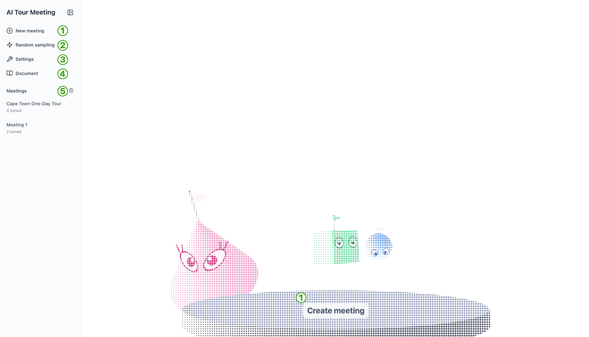
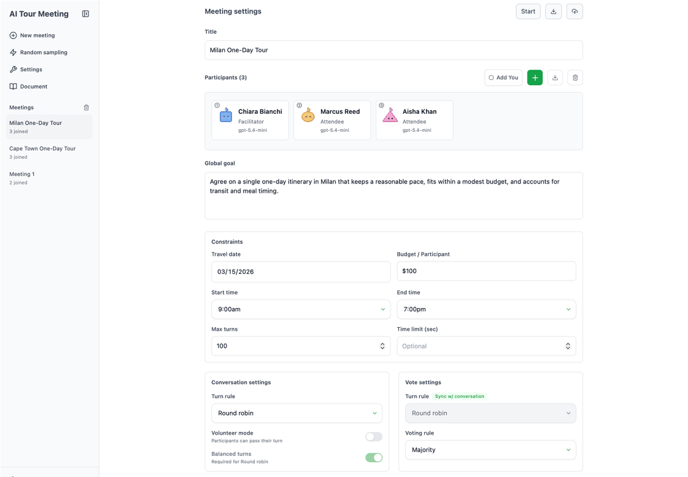
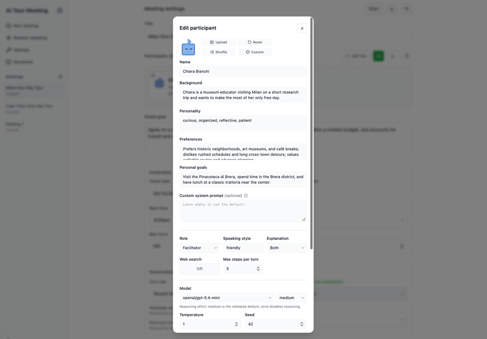
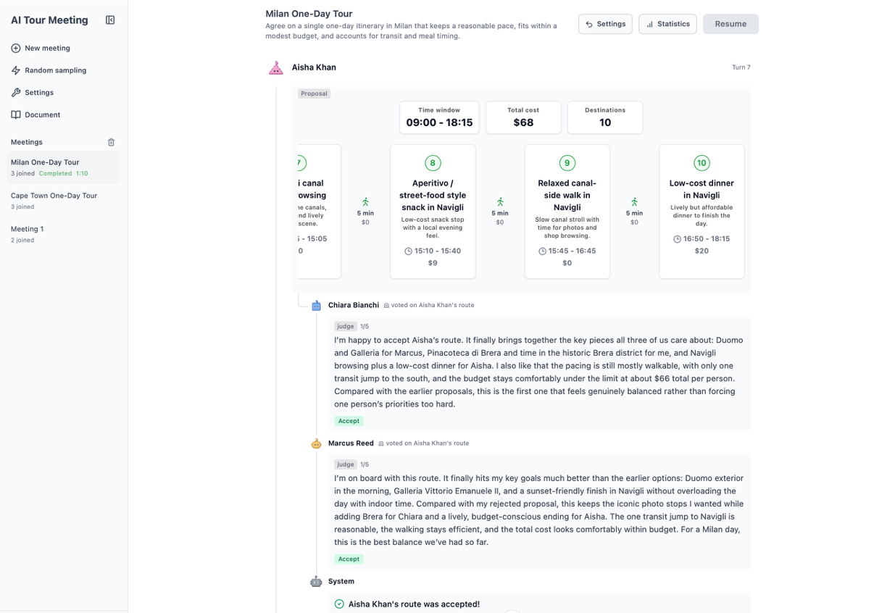
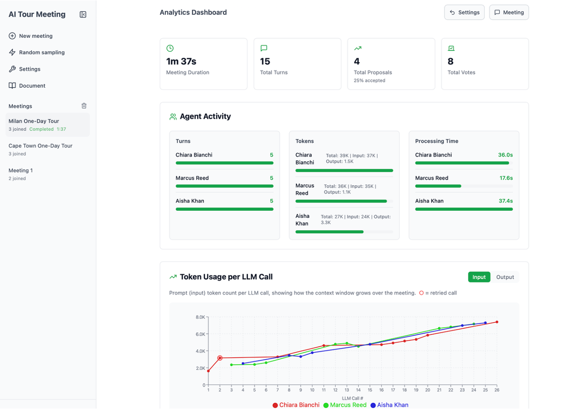

GUI
This page guides you through the GUI. After deploying AI Tour Meeting with make up, access localhost:3000 in your browser, and you will see the GUI shown below.

Meeting settings
Clicking New meeting opens the meeting settings page shown below. Here, you can set the meeting title, the participants, the global goals shared by all participants, constraints such as time and budget, and the turn and voting rules for each of the conversation and voting phases.

Participant settings
Clicking the + button in the Participants section of the meeting settings page opens the participant settings screen shown below, where you can add a participant. For each participant, you can specify a persona (e.g., background and personality), personal goals, a role, the LLM that instantiates the participant, and more.

Meeting monitoring
Once the meeting is configured, clicking the Start button at the top right of the meeting settings page automatically takes you to the meeting screen shown below. Here, you can monitor the participants discussing with each other in a chat-style view.

Analytics dashboard
After the meeting ends, clicking the Statistics button at the top right opens the analytics dashboard shown below. Here, you can visually check basic metrics such as meeting duration, turn counts, token consumption, and statistics on proposal acceptance. You can also export all meeting logs and metrics in JSON format from the sidebar, enabling more detailed analysis through custom scripts using the exported JSON.
